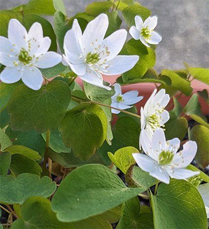
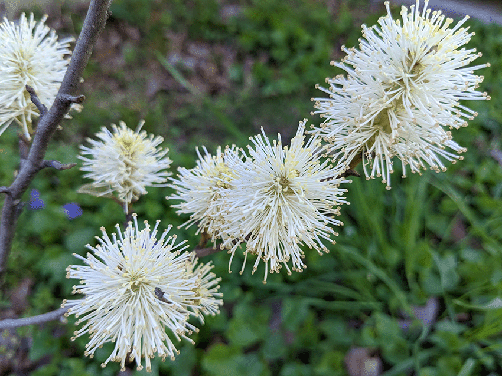
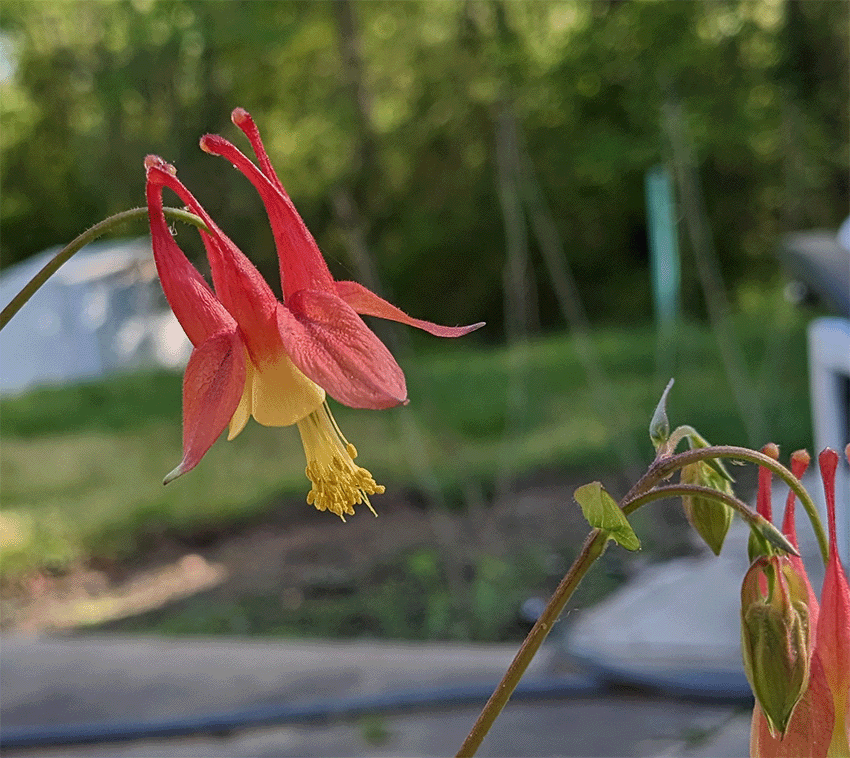
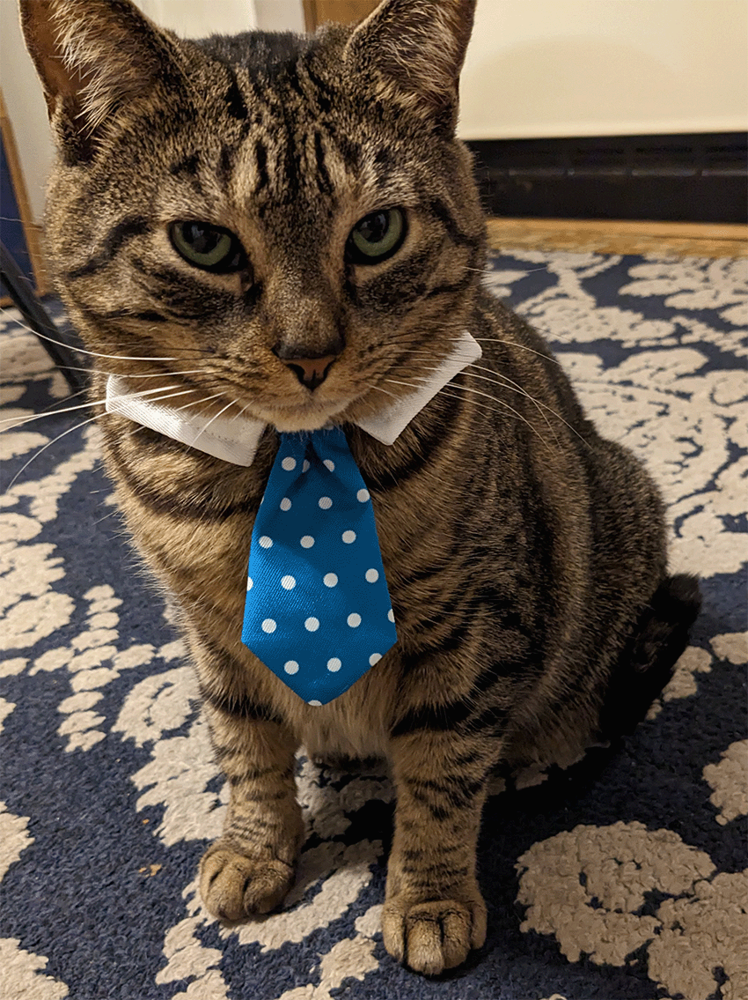

Check it out! We've got some cool suggestions for native plants in the U.S. These suggestions are based on the east coast, if you know of any awesome west coast native plants, we'd love to hear about them.
A woodland perennial that loves dappled shade. It blooms from May to June. Its pollen is food for many native pollinators that don't rely on nectar. A nice bonus is that deer and rabbits tend to leave it alone.
Slow growing dwarf shrub that is native to the eastern U.S. it is in the same family as witch hazel. It stays a relatively small size, around 5 feet or less given the variety. Beautiful blooms in early spring, that have a sweet smell to them. It's known not only for it's blooms but it's beautiful autumn color. Pollinators such as bees love this little shrub, and the birds like the cover it gives it in the autumn. It prefers a sunny spot, but part sun will do as well.
A happy perennial that will start blooming late spring and into summer. The flowers are mainly to attract hummingbirds, the plants main pollinators. They also draw in bee, butterflies, and moths. It's a short lived perennial, however it happily reseeds on its own. So left to its own, it will gladly take over a part-sun area in your garden.
A very perturbed cat that somehow stumbled her way here. She's still unclear on the details, but she thinks that she is supposed to be at a very important meeting involving food.
